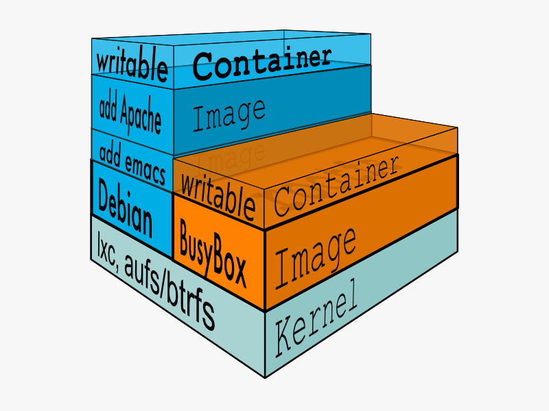

Docker - Что? Как? Зачем?
DevDay Kazan #12
Кто ты такой?
- Разработчик в БАРС Груп
- На работе - .Net, JavaScript, Ruby
- Для души - Python, Go и что-нибудь из функционального заверните
План
- Что такое Docker?
- Как его использовать?
- Зачем он нужен?
- Demo
Что?
Docker - открытая платформа для разработки, доставки и запуска приложений. http://docker.io
Основные компоненты Docker
- Docker - open source платформа контейнерной виртуализации
- Docker Hub - Software-as-a-Service для управления и распространения Docker-контейнеров.
Архитектура

Docker изнутри
- Docker images
- Docker registries
- Docker containers
Docker image
Read-only шаблон для запуска контейнеров. Dockerfile
# Dockerizing RabbitMQ: Dockerfile for building RabbitMQ images
# Based on ubuntu:14.04, installs RabbitMQ following the instructions from:
# http://www.rabbitmq.com/install-debian.html
FROM ubuntu:14.04
MAINTAINER Radik Fattakhov radikft@gmail.com
RUN apt-get update
RUN apt-get install -y -q wget
RUN echo 'deb http://www.rabbitmq.com/debian/ testing main' | tee -a /etc/apt/sources.list
RUN wget http://www.rabbitmq.com/rabbitmq-signing-key-public.asc
RUN apt-key add rabbitmq-signing-key-public.asc
RUN apt-get update
RUN apt-get install -y -q rabbitmq-server
RUN rabbitmq-plugins enable rabbitmq_management
EXPOSE 5672 15672
ENTRYPOINT ["rabbitmq-server"]
Docker registry
Хранилище для Docker images - например, Docker Hub.Docker container
$ docker run -i -t ubuntu /bin/bashПод капотом
- Namespaces (pid, net, ipc, mnt, uts)
- Control groups
- Union file systems (AUFS, btrfs, vfs и DeviceMapper)
- Container format (libcontainer, LXC)
Как начать использовать Docker?
Установить boot2dockerЗачем?
- Быстрее доставлять ваши приложения
- Deploy & масштабироваться быстрее
- Эффективнее использовать ресурсы
- Простота управления